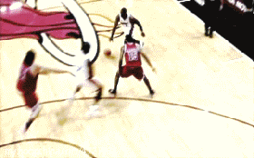
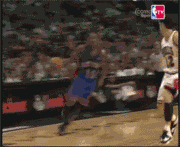
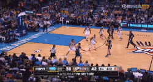
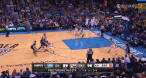
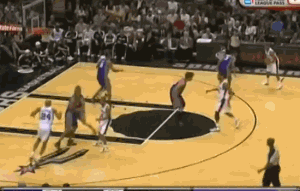
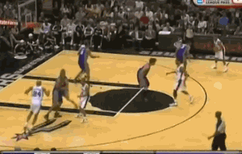

为什么喜欢篮球
我打篮球，打得不好。
也许有的时候会很好，有的时候真的很糟糕。我没有让人疯狂的能力，但有的时候确实会让自己发疯。
我不高，也不胖，我没有很好的弹跳能够完成炫目的扣篮，也没有恐怖的力量能够统治所有对手。
是的，如你所见，我只是个普通到极点的人。
我不能在空中折叠，躲过防守完成得分，事实上我连在空中的时间都少得可怜；
我也不能依靠脚步晃过对手戏弄般的完成进攻，事实上有时候我可能是后者；
当然啦，有的时候我能碰巧搞到一些盖帽，但很多时候更高大得对手会把球直接盖在我的脸上。
三分?我当然喜欢，但说实话命中率和我爸买的彩票中奖有的一拼。
还有我的最爱——那些花哨的胯下运球和戏耍动作，当然我只在视频和想象中和它们碰面——我可不想被自己晃得摔个半死。
但，是的，你没听错：我爱篮球，有好多年了，我从没后悔。
从来没有。
和每一个男孩一样，我对篮球的热爱起源于球星们帅气的过人和蓬勃的激情。
 
亦或是堪称神迹的三分和精准的判断
 
还有绝妙的团队配合和成员间的默契
 

虽然这些技巧跟我的水平有着天壤之别，但是，对篮球的热情和喜好都是一样的。的确，我可能缺少天分，但是，这并不影响我对它的热爱。所以，即使受伤，即使受挫，我也会坚持下去。